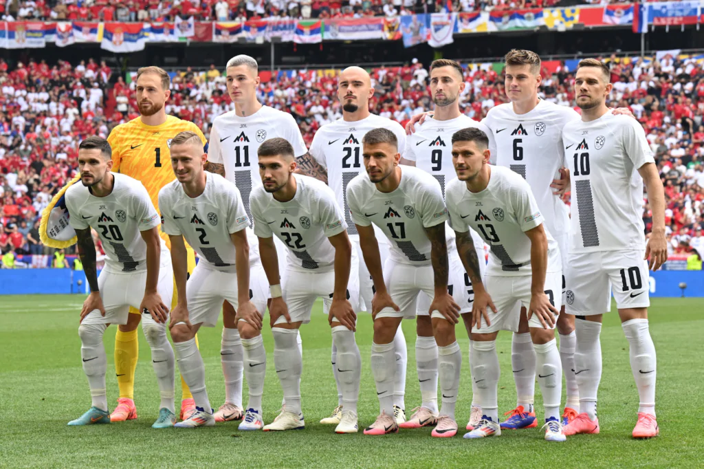

Seleção Eslovena na UEFA Eurocopa
A Seleção Eslovena vem a Euro em busca de seu primeiro título, com o país em boa fase pelos bons jogadores que se concentraram no time, como o goleiro de nível mundial Oblak, e a jovem sensação do RB Leipzig, Benjamin Sesko.
